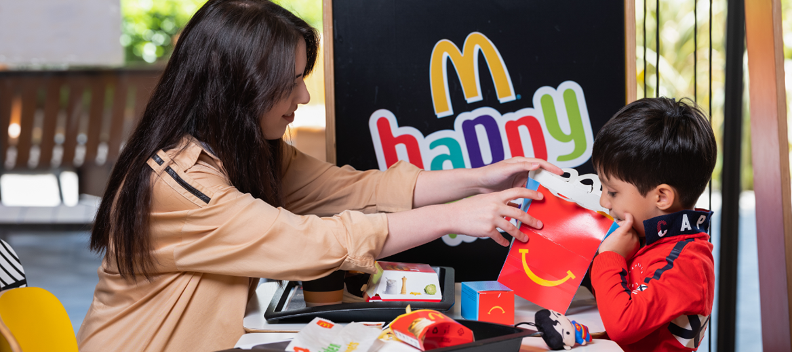

“McDonald’s”dan yemək sifarişlərinin çatdırılması.
“McDonald’s”dan yemək sifarişlərinin çatdırılması.

“McDonald’s”ın mobil tətbiqini yükləyin.
"McDonald's" tətbiqində xüsusi təkliflər.

McDonald’s Azərbaycan restoranlarında təqdim olunan bütün mal əti kotletləri yerli mənşəlidir və yüksək keyfiyyət standartlarına uyğun şəkildə hazırlanır. Ətin tədarükündən emalına, dondurulmasından restoranlara çatdırılmasına qədər bütün mərhələlər yalnız Azərbaycanın daxilində həyata keçirilir.
McDonald’s üçün ət Azərbayanın şimal bölgəsində yerləşən heyvandarlıq təsərrüfatında yetişdirilən iribuynuzlu heyvanlardan əldə olunur. Heyvanlar tamamilə təsərrüfatın özündə istehsal olunan, qatqısız və təbii yemlərlə qidalanır. Sağlamlıq vəziyyətlərinə daimi baytarlıq nəzarəti tətbiq edilir.
Ətin emalı Bakının Buzovna qəsəbəsində yerləşən “AzProtein Foods Group” fabrikində həyata keçirilir. Burada McDonald’s üçün ayrılmış xüsusi istehsal xətti mövcuddur. Ət halal qaydalara uyğun şəkildə kəsildikdən sonra üç mərhələdən ibarət prosesdən keçir: xırdalanır, Formax xətti ilə formalaşdırılır və spiral dondurucuda dondurulur. İstehsal zamanı ətə heç bir qatqı və ya əlavə edilmir — istifadə olunan məhsul 100% saf mal ətidir.
İstehsalat sahəsi ISO 22000, HACCP və Halal sertifikatlarına malikdir. Ət gündəlik laborator analizlərdən keçirilir. Eyni zamanda, istehsal prosesinə McDonald’s-ın yerli vә beynәlxalq komandaları tәrәfindәn davamlı nәzarәt olunur. Mәhsul nümunәlәri mütәmadi olaraq McDonald’s Avropa Keyfiyyәt Mәrkәzinә (Münhen, Almaniya) göndәrilir vә orada müxtәlif testlәrdәn keçirilir. “AzProtein” müƏssisәsi hәm elan olunmuş, hәm dӘ xӘbәrsiz beynӘlxalq auditlәrә cӘlb olunur.
Dondurulmuş məhsul xüsusi soyuducu yük maşınları ilə fabrikdən mərkəzi anbara, oradan isə sifarişə əsasən restoranlara daşınır. Təchizat zənciri boyunca temperatur rejiminə ciddi nəzarət edilir və bu HACCP sistemində əsas kritik nəzarət nöqtələrindən biridir. Hər bir nəqliyyat vasitəsi temperatur loqqerləri ilə təchiz olunub vә mәhsul qәbul edilәrkәn temperatur göstәricilәri yoxlanılır.
Restoranlara çatdırılan kotletlәr qril avadanlığında bişirilir. Bişirildikdәn sonra onlara yalnız bir çimdik duz vә istiot әlavә edilir — әlavә heç bir inqrediyent istifadә olunmur.
McDonald’s üçün əsas dəyər istehlakçıların inamıdır. Məhz buna görə ətin mənşəyi, hazırlanması və təhlükəsizliyi ilə bağlı bütün mərhələlər şəffaf şəkildə qurulub və mütəmadi nəzarətdə saxlanılır. Azərbaycanda istehsal olunan bu məhsullar həm yerli, həm də beynəlxalq keyfiyyət və qida təhlükəsizliyi standartlarına cavab verir.
“McDonald’s”dan yemək sifarişlərinin çatdırılması.

"McDonald's" tətbiqində xüsusi təkliflər.